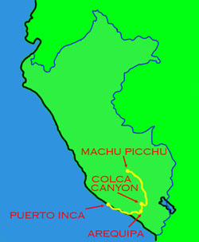
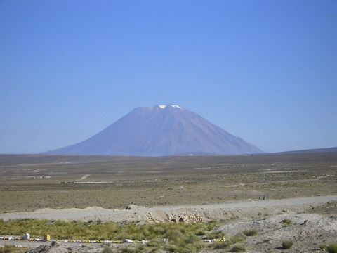
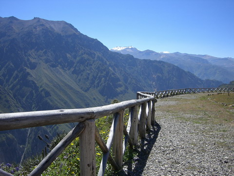
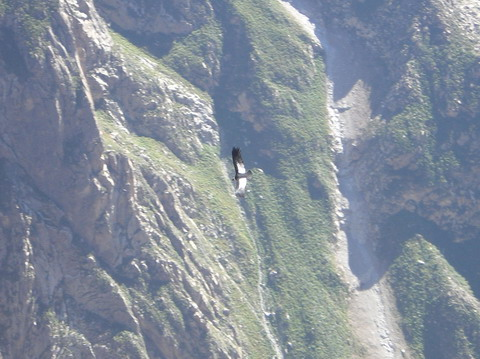
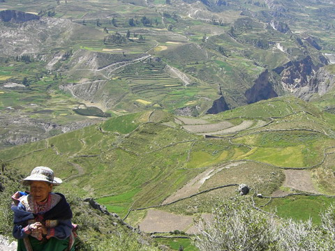
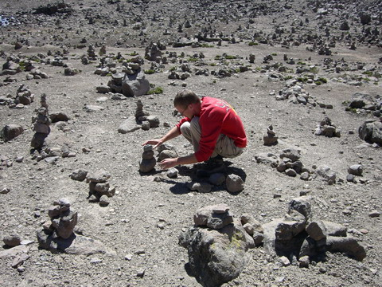
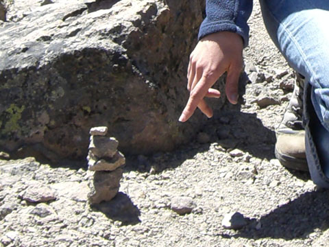
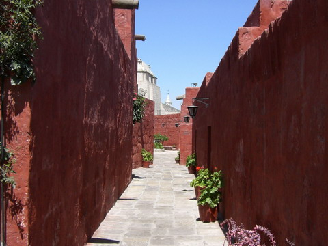
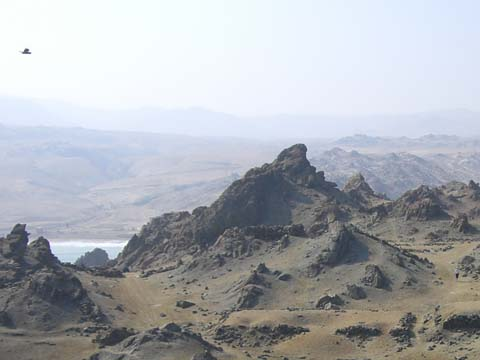
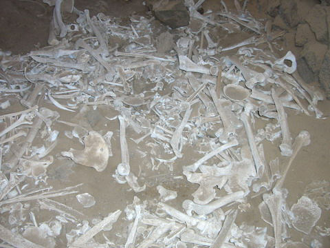

peru

south to the coast
getting to the coast involved lots of driving along dodgy bumpy desert roads. in the middle of it all is the impressive volcano mount misti. i also took some panoramas near here.
colca canyon
a main stop over on the way was the colca canyon. though it's deeper than the grand canyon it is much more of a plain v shaped so the other side was a lot closer.
the reason for the stopover was to come out early in the morning to see the canyons most famous residents, the condor. these birds are very large, with wing spans up to 2.5 m. some days you don't see any but we were lucky to see about a dozen zooming around riding the thermals.
there were more examples of endless canyons full of endless terraces surrounded by endless old ladies in traditional dress.
our highest point in peru was just under 5000m at some random place along the highway. there was nothing but a forest of cairns
we both made one but lets just hope for rens sake that any luck you get from them isn't proportional to their size!
arequipa
arequipa is the main city south of cusco. in the morning we went out to the famous and beautiful santa catalina monastery. i got as far as the bathrooms near the entrance before having to throw up for awhile and stagger home. so much for the lucky cairns. at least ren got to see it!
puerto inca
the coast of peru is verrrry dry. it's amazing what influence the andes has. to the east is the amazon, wet and swarming with life and to the west is the coast and pretty much nothing but desert. we stopped at the ruins near puerto inca and it is the deadest (is that even a word?) place i've been to outside of a desert. quite creepy.
can you pick out...
the ruins were a bit creepy with chambers full of bones. human bones that is!